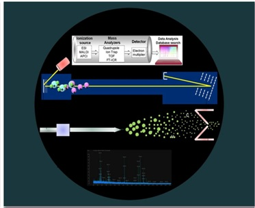

Mass spectrometry is a useful technique for accurate mass measurement by producing charged molecular species in vacuum and their separation by magnetic and electric fields based on mass to charge (m/z) ratio. Matrix-assisted laser desorption/ionization time-of-flight(MALDI-TOF) is a commonly used mass spectrometer configuration using matrix assisted laser desorption ionization for the generation of peptide ions by exposing the target analyte to short, intense pulses of laser; followed by detection based on correlation between m/z of ions to their flight time from source to detector. It is widely used in proteomic research as a high-throughput technique to identify proteins and their post translational modifications. It is also applicable for detection of intact molecular weight of different biomolecules.

In this module, we have discussed the details of sample preparation for MALDI-TOF MS analysis, instrumentation as well as data analysis. After the proteomic analysis of the 2D-gels, specific protein spots are selected as the protein of interest due to there up or down-regulation when compared to their controls. The proteins of interest specified from the gel-based proteome profiling methods are subjected to further MS analysis for determination of their identity. In-gel proteolytic digestion of separated proteins is performed to cleave the proteins present within the polyacrylamide matrix. Mass spectrometric identification of the target protein greatly depends on the efficacy of the in-gel digestion process that generates mixture of peptides from the target protein through proteolytic digestion (Experiment 4). We'll demonstrate how the in-gel digested protein samples can be processed using ZipTip pipette tips containing C18 or C4 media prior to MS analysis for peptide enrichment and removal of salts and interfering agents (Experiment 5). Details of sample spotting and overall MALDI TOF instrumentation will be provided in Experiment 6. Generation of peptide mass fingerprinting (PMF) from the serum proteins and analysis of the MALDI-TOF peptide mass fingerprinting data will be discussed in Experiment 6 and Experiment 7. Finally, we'll demonstrate an application of the instrument for determining molecular weight of intact proteins (Experiment 8).
Instruction To Users:-
In order to clearly understand each experiment and make best use of the contents provided, we suggest you to proceed as per the following steps.
- Initially start with the theory section, recall technical knowledge over each step, go through the manual and define an overall design, workflow, to conduct a MALDI TOF MS experiment and data analysis.
- In protocol section learn the minute integrity required to perform the experiment by going through the standardized protocol defined for each of the steps.
- Practice; operate through each step of the experiment in simulator section to visualize the entire process.
- Go through the video files to get real lab experiences of performing experiments associated with MS-based proteomics.
- In the download sections, course contents are provided for the users to export files, for analyses and in case to perform assignments. Download the MS data provided and perform analysis using any search engine (like MASCOT). To asses yourself compare your results with the results obtained from our analysis for the same MS spectrum.